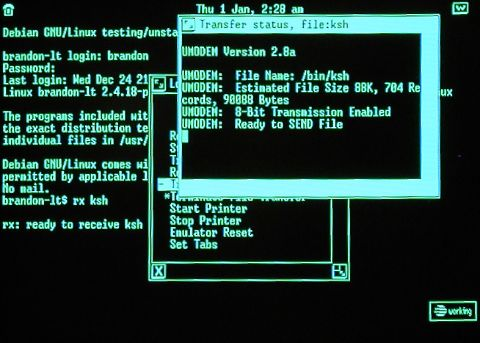

The Unix PC was a 1980s-era personal computer; there is more information about it at the Unix PC Archive page.
I recently decided to copy the files off of my account on an old Unix PC before they are finally lost to a hardware failure. This turned out to be more involved than I expected, requiring an impromptu refresher course on its user interface and communications software. Here I present the results so that others who want to salvage data from these venerable personal computers can do so with the minimum of hassle. Necessary equipment are the Unix PC in question, a null modem cable as described at greater length below, and another computer that can offer a serial command line with X-modem software. For the latter I used my Linux laptop, but any decent operating system should do.
Because this page includes numerous screen shots of the Unix PC in action, it may also provide an occasion for nostalgia at this wonderful machine that provided both Unix System V to the desktop and a windows interface with integrated mouse.
In addition to describing in detail how to perform file transfer using the native Unix PC software, this page also describes:
Before proceeding, one or two notes are in order about navigating the Unix PC's interface.
When you log in to the Unix PC you are presented with a menu called your Office. As you select entries from it, more windows will be opened on the screen, some representing file folders, others presenting menus of options, and still others containing running programs. You can always bring up a list of the currently open windows by clicking with the mouse on the W in the upper right hand corner of the screen, or by pressing <Shift> and either <Suspd> or <Rsume>; pressing <Suspd> or <Rsume> without holding down <Shift> will usually cycle among the open windows, but may not, depending on the application you are using.
To log off the Unix PC, return to the Office and press <Exit>. To shut the machine down so you can safely power it off, return to the Office, press <Cmd>, and select |Shutdown| from the menu of commands.
Note that you will almost certainly want a fully connected null modem cable so that you can enable hardware flow control. Some homemade null modem cables are rudimentary, and only bother connecting the Transmitted Data and Received Data lines — leaving unconnected the Request to Send (RTS) and Clear to Send (CTS) lines, with which RS-232 devices traditionally signal each other when they are ready to receive data. While this omission rarely affects modern machines, whose speed and well-buffered serial port hardware make data loss unlikely, the Unix PC easily finds itself overwhelmed at high data rates. Unless the Unix PC can control when it receives data through a connection between its RTS line and the CTS pin on the other machine, you will probably find that only very low baud rates prevent bytes from being lost.
When the RTS and CTS signals are unavailable, one can enable software flow control as an alternative; but this works only for text connections, and breaks badly when you attempt to transfer files. It reserves two special characters (usually those sent on the keyboard by <Cntl>+<S> and <Cntl>+<Q>) as signals which tell the other machine to halt and resume transmission. You can test this out on the Unix PC at any Unix prompt — begin listing a long directory (try ls /usr/bin) and then press <Cntl>+<S>; the scrolling output should pause and wait until you press <Cntl>+<Q> to resume it.
The problem with software flow control is that file transfer protocols generally feel free to use any characters they please, and the first <Cntl>+<S> that happens to be sent freezes the connection and halts the file transfer. The procedures below will therefore assume either that your are using hardware flow control with correctly connected CTS and RTS lines, or that you will select a slow enough data rate that flow control is not necessary.
The RS-232 dialogue presents three fields. At the Device Type field, press <Cmd> and choose |COMPTUER|. For the Device Speed use anything you want; we will be making outgoing connections, which ignore this setting and use their own baud rate. Choose |Yes| for hardware flow control if your null modem cable connects the RTS and CTS lines of your two computers, as described in the previous section; otherwise choose |No| to prevent the Unix PC for waiting forever for a Clear to Send signal that will never reach it.
When done, press <Enter> to submit the form.
A final dialogue box will appear, asking whether you want the port configured to accept incoming connections or make outgoing ones. Press <Cmd> and select |CALLER only| to prepare the port for outgoing connections. Press <Enter> to submit the form and you should get the message:
The RS232 port is now set up.This indicates that the port is now ready for use.
Please press Enter to continue.
Had you chosen |HOST only| instead,
the port would prepare to answer incoming connections from another machine.
But the Unix PC will apparently only offer a login prompt
when it senses carrier detect —
a signal which most null modem cables cannot provide.
We will therefore rely upon outgoing connections,
which can easily be made to ignore the lack of carrier detect.
Next you must create an RS-232 profile specifying the communications settings you want to use. You can create as many profiles as you wish, one for each combination of serial port settings you find useful. For the moment we will create a single entry for standard 9600 bps operations. Each profile is actually a file in your
~/Filecabinet/Profiles/directory with an :A2 extension. Profiles can easily be created from the file manager through the following procedure.
From your Office, select |Filecabinet|
and from inside it select your |Profiles| directory.
You may find it empty, as shown at the right,
or it may already contain several profiles;
in either case we will create a new one for this project.
Once in the Profiles window,
press the <Creat> key on the left side of your keyboard
(you could also press <Cmd>
and select |Create| from the menu).
This will bring up a list of file types that you can create.
Select |RS-232 Profile| from the available file types,
enter the name 9600-local for the new file,
and press <Enter>.
This should bring you to the Terminal Setup screen where all of the attributes of your new profile are displayed. The basic communications settings are set to reasonable defaults in the illustration on the right: the fastest speed of |9600| bps, |No| parity checking in either direction, the ubiquitous |VT100| terminal type, and eight-bit characters separated by one stop bit.
There are two options we can ignore and leave disabled. Character Echo provides for the rare case of connecting to a system that does not echo your keystrokes; when enabled, the Unix PC itself will echo your keystrokes so you can see what you are typing. Auto Login lets you construct a script that automatically responds to prompts as you connect to another system.
The remaining three options, however, are critical to the proper operation of your data connection:
But null modem cables rarely provide carrier detect, so you should select |No| when making a serial connection directly to another computer. The symptom of leaving this option enabled when directly connecting is that you can log into the remote system normally, but attempts to transfer files hang.
If instead you answered |No| to hardware flow control, this option tells the Unix PC to monitor the characters sent by the other machine for start and stop characters; leave it disabled, to prevent the file transfer protocol from accidentally pausing the connection if it uses those characters itself.
But if your answer was |No| to hardware flow control, this option tells the Unix PC to send a <Cntl>+<S> when it is feeling overwhelmed and then a <Cntl>+<Q> when it is ready to receive more data. This will wreak havoc with any file transfer and should certainly be disabled.
We are almost ready to make our connection.
From your Office,
select |Telephone| to bring up your call screen;
this may be empty like the one shown at the left,
or it may contain several entries already.
We are going to create a data connection entry
that uses the RS-232 profile we just designed.
Press <F7> which,
you can see from the bottom of the screen,
allows you to edit your telephone directory,
and select |Create data entry|
from the list of commands.
You can leave most of the new data entry blank. As in the example to the right, give it a name you will recognize when you return to the call screen, and make sure that In Call Screen is set to |Yes| so that it will be listed. Use the Data Profile Name to associate it with the data profile you created earlier, and make sure it will use |Serial Port 0|.
Press <Enter> when you have completed your changes
to return to the call screen.
If after returning to the call screen
you want to edit the data profile again,
simply highlight it,
press <F7>,
and select |Modify data entry|
from the list of commands.
Finally we are ready to connect to your other machine and copy files off of the Unix PC! Connect your null modem cable to the Unix PC and your other machine, using any necessary converters to deal with the gender of the Unix PC's serial port. Then highlight the call screen data entry we have just created, as shown at right, and press <Enter>. The Unix PC will churn while the asynchronous terminal emulator is loaded (the program is called async_main), and then the screen will go black and you will have access to the serial line.
Your first question upon entering the terminal emulator is probably how to leave, since it uses the full screen and does not provide a window border. On the Unix PC you can always move to another window by clicking W in the upper right hand corner of the screen, or pressing either <Shift>+<Suspd> and <Shift>+<Rsume>. The terminal emulator will continue running while you do other tasks, and will be ready when you return. But you can also get the attention of the terminal emulator itself:
In this example the other machine is my Linux laptop, but any operating system with a decent command line will do. From the root prompt of my Linux machine I can provide the serial port with a login prompt simply by typing:
$ getty -L -h /dev/ttyS0 9600 vt100where -L tells getty the connection is local and it need not wait for carrier detect, and -h turns on hardware flow control. You might want to omit -h if your null modem cable does not support the CTS and RTS signals. Read your own getty(8) man page for details, and check whether you enabled hardware flow control in the communications profile you created earlier.
At right you can see that getty immediately printed a login banner. I entered the username and password of my account on the laptop, and — after the usual welcomes and disclaimers — was presented with a login shell.
Since the umodem file transfer protocol
supported by the Unix PC
turns out to be an implementation of the standard X-Modem protocol,
I have run the rx command
which is sitting and waiting for an X-Modem transmission to begin.
Its argument tells it the file
into which it should place the data it receives;
here I have named the file ksh,
because I will be transmitting /bin/ksh
from the Unix PC.
 Now that the laptop is ready to receive a file, I press <Shift>+<Cmd>, select |Transmit File - UMODEM| from the command menu, select the |Binary| transfer mode and enter the file name /bin/ksh, and finally press <Enter> to begin the transfer. The status of the file transfer will be displayed as in the screen shown at the right, and once the tranfer begins the program will begin printing
Sent sector 1. Sent sector 2. Sent sector 3. Sent sector 4.and so forth until the complete file has been transmitted.
At any time you can return to the command menu and select |*Terminate File Transfer| to interrupt the file transfer.
You should be returned to the terminal emulator, and the rx command on your other machine should return you to the command prompt, once the file transfer has completed.
There are two drawback to this file transfer method.
First, it is somewhat slow —
X-Modem does not send each block
until the receiver has verified the checksum of the previous block,
making the serial line sit idle between blocks
until the receiver acknowledges its receipt.
Second, X-modem is not careful to end the file at exactly the right place
and you will usually find it padded with a few null characters on the end,
which must be snipped off before the checksums of the original file
and its copy will match.
But as this seems to be the only error-checked file transfer method
natively supported by the Unix PC,
these limitations are best endured.
After making changes to this file you must log out and back in to bring them into effect.Name = Hardware Setup Default = Open Open = UA Hardware Help = EXEC -d /usr/bin/uahelp -h /usr/lib/ua/admin.hlp -t "Hardware Setup" Name = Root Shell Default = Run Run = EXEC -pwd /bin/ksh
It must have seemed reasonable on these small machines to allow knowledgeable console users access to a root prompt. Users must not take advantage of this to undertake mischief. I have only supplied these details to assist any administrator who finds himself in charge of a Unix PC whose root password was long ago forgotten, but who might have access to another user account; note in particular that the tutor account comes installed on the Unix PC without a password.
For complete documentation on adding entries to your Office menus, see the ua(4) manual page. You can see more examples in the /usr/lib/ua directory of your Unix PC, where all of the default menu entries are defined.
The only place in the Unix PC documentation where this higher speed is mentioned is its termio(7) man page — even the stty(1) man page shows 9600 as the highest baud rate, followed by exta and extb, which select externally clocked data rates. But the application interface for terminal control described in termio(7) shows that the c_cflag field of the termio struct can have the values:
It turns out that each communications profile specifies the baud rate in the byte at offset seven. We can examine the 9600 baud profile we have already created by selecting UNIX System from the Office and running the commands:B9600 0000015 9600 baud B19200 0000016 19200 baud EXTB 0000017 External B
The value 075 in byte seven seems to combine the values B9600 and CS8 from the definition of c_cflag in termio(7), specifying 9600 bps using eight-bit bytes. To increase the baud rate we must simply replace B9600 with B19200, making the value 076. Since Unix does not provide a tool for manipulating binary files, use your favorite editor at the command prompt to create this tmp.c file:$ cd Profiles $ od 9600-local:A2 0000000 053504 012004 000000 004075 000000 000000 000000 000000 0000020 000000 000000 000000 000000 000000 000000 000000 000000 * 0001514
#include <fcntl.h>
int main() {
char c = 076;
int fd = open("19200-local:A2", O_RDWR);
lseek(fd, 7, 0);
write(fd, &c, 1);
}
You can verify that this operation succeeded by examining the new file and confirming that its seventh byte has been set to the desired value:$ cp 9600-local:A2 19200-local:A2 $ cc tmp.c $ ./a.out
Now return to your Telephone window and create an entry using this new profile to begin communicating at high speed.$ od 19200-local:A2 0000000 053504 012004 000000 004076 000000 000000 000000 000000 0000020 000000 000000 000000 000000 000000 000000 000000 000000 * 0001514